Vnitřní boxy pro koně
Vnitřní box pro koně – Model Classic
Standardní rozebíratelný vnitřní box pro ustájení koní v již postavených objektech.
| Šířka | 3,5 m |
|---|---|
| Délka | 3,5 m |
| Výška | 2,2 m |
Komplexní strojírenské služby od výkresové dokumentace přes CNC tvarové dělení plazmou ES-320, lisování na strojích LEN a precizní povrchová úprava až po montované ocelové haly a špičkové vnitřní i venkovní boxy pro koně. Vlastní výrobní areál 1 500 m² ve Tvrdonicích.
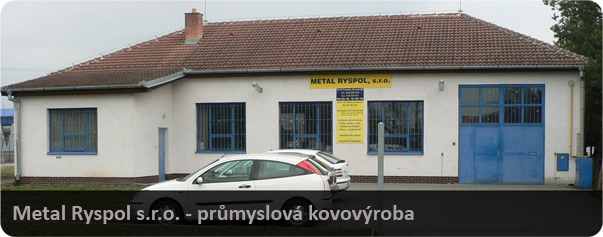
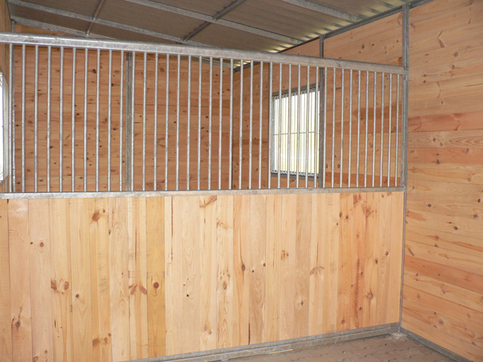
Stáje & Boxy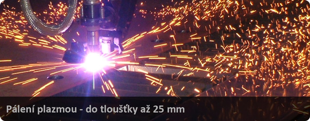
CNC PlazmaPřehledné členění našich hlavních oborových divizí s garancí vysoké tuhosti, přesnosti a antikorozní ochrany.
Od roku 1998 provozujeme počítačem řízené CNC tvarové dělení plazmou. Pracovní stůl o rozměrech 1 500 × 3 000 mm umožňuje pálení konstrukčních ocelí, nerezu, hliníku i mosazi v tloušťkách od 1 do 25 mm. Všechny výpalky dodáváme 100% očištěné bez otřepů a zápalů.
Kotoučová pila s automatickým podavačem a pásové pily pro přesné úhlové i kolmé dělení profilů, jeklů a trubek. Elektrické tabulové a profilové nůžky pro střih plošných plechů.
Veškeré lisařské práce na střižných a tvářecích strojích řady LEN. Lisování kovových dílů ze železných i barevných kovů (měď, mosaz, bronz, hliník) do síly materiálu 15 mm.
Komplexní výroba rozebíratelných stájových systémů ze žárově zinkované oceli v kombinaci s masivním dřevem. 8 typizovaných modelů vnitřních boxů (Classic, Amsterdam, Madrid, Paris, London, Hannover, Berlin a Individual) a 6 venkovních konfigurací (jednoboxy, řadové stáje, rohové sestavy a dvouřadé objekty se seníkem).
Výroba a montáž montovaných ocelových hal, skladových přístřešků, točitých i přímých schodišť, bezpečnostních pozinkovaných mříží a průmyslových vrat.
Kompletní ochrana žárovým i galvanickým zinkováním, práškovým lakováním komaxit dle vzorníku RAL nebo syntetickými laky. Dlouholetý ověřený dodavatel přesných dílců pro OTIS Escalators.
Filtrujte mezi vnitřními a venkovními boxy pro koně, technologiemi plazmového pálení, lisování a ocelových konstrukcí.
Standardní rozebíratelný vnitřní box pro ustájení koní v již postavených objektech.
| Šířka | 3,5 m |
|---|---|
| Délka | 3,5 m |
| Výška | 2,2 m |
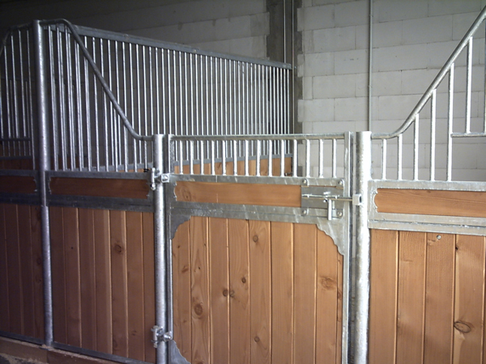
Vnitřní boxy pro koněElegantní stájový box s jemným mřížováním a otočnou krmnou klapkou.
| Šířka | 3,5 m |
|---|---|
| Délka | 3,5 m |
| Výška | 2,2 m |
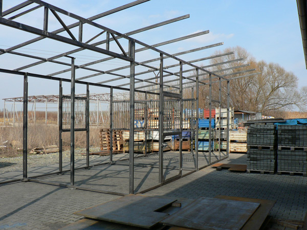
Vnitřní boxy pro koněZesílený vnitřní box s obloukovým horním profilem pro reprezentativní stáje a chovné hřebce.
| Šířka | 3,5 m |
|---|---|
| Délka | 3,5 m |
| Výška | 2,2 m |
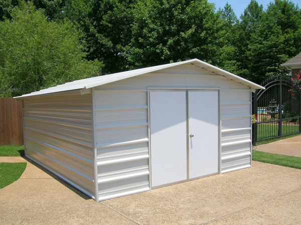
Vnitřní boxy pro koněFrancouzský styl s nízkou čelní stěnou pro maximální kontakt zvířete s ošetřovatelem.
| Šířka | 3,5 m |
|---|---|
| Délka | 3,5 m |
| Výška | 2,2 m (snížené čelo) |
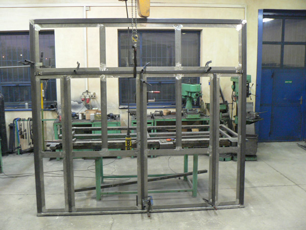
Vnitřní boxy pro koněKlasický britský stájový profil s robustním vodorovným rámem a posuvnými dveřmi.
| Šířka | 3,5 m |
|---|---|
| Délka | 3,5 m |
| Výška | 2,2 m |
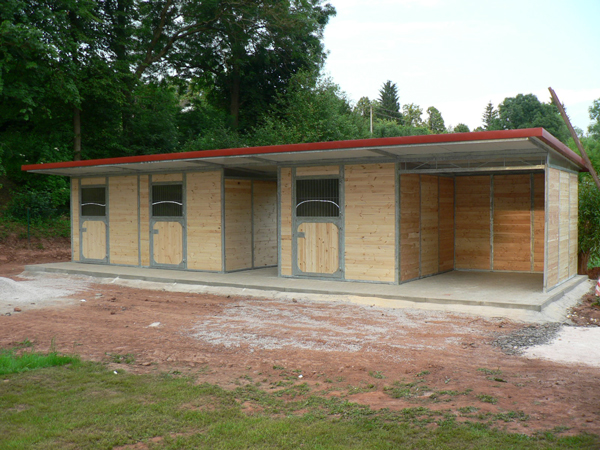
Vnitřní boxy pro koněNěmecký standard bezpečnosti se zvýšenou mřížovou stěnou pro chovné stanice.
| Šířka | 3,5 m |
|---|---|
| Délka | 3,5 m |
| Výška | 2,2 m |
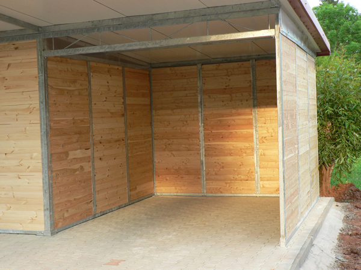
Vnitřní boxy pro koněModerní industriální design s rovnou čelní linií a integrovanou servisní brankou.
| Šířka | 3,5 m |
|---|---|
| Délka | 3,5 m |
| Výška | 2,2 m |
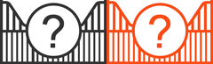
Vnitřní boxy pro koněZakázkové provedení stájového boxu dle specifických rozměrů a požadavků klienta.
| Šířka | Dle zaměření (např. 3 až 6 m) |
|---|---|
| Délka | Dle dispozice stavby |
| Výška | Libovolná dle světlosti objektu |
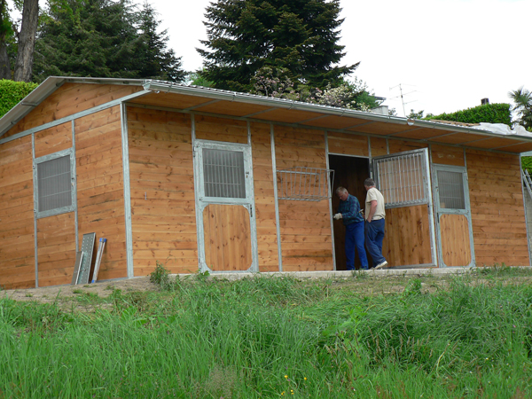
Venkovní boxy pro koněSamostatně stojící zateplený či nezateplený venkovní box s pultovou střechou.
| Šířka | 3,5 m |
|---|---|
| Délka | 3,5 m |
| Výška | 3,0 m |
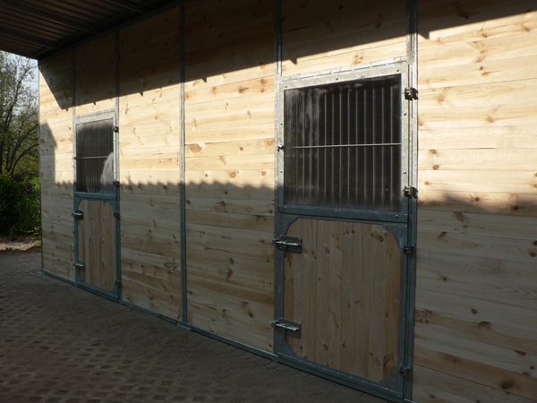
Venkovní boxy pro koněKombinovaný modul stájového boxu a krytého skladu sena a krmiva.
| Šířka | 10,5 m (celková fronta) |
|---|---|
| Délka | 3,5 m |
| Výška | 3,2 m |
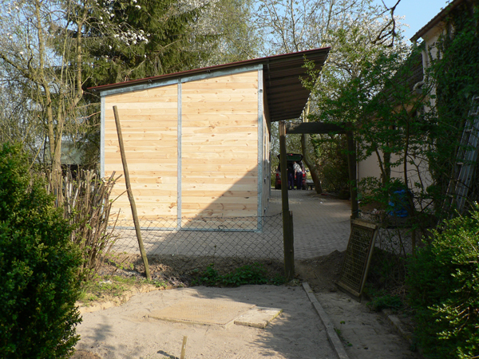
Venkovní boxy pro koněVíceboxová jednořadá stáj pro chovná centra a jízdárny s předním přesahem střechy.
| Šířka | 10,5 m (3 boxy vedle sebe) |
|---|---|
| Délka | 3,5 m |
| Výška | 3,8 m |
Rohové uspořádání stájí pro optimální využití hospodářského dvora.
| Šířka | 15 m |
|---|---|
| Délka | 14 m |
| Výška | 3,2 m |
Plnohodnotná montovaná stájová budova se dvěma řadami boxů a krytou chodbou.
| Šířka | 10,0 m |
|---|---|
| Délka | 10,5 m (nebo násobky 3,5 m) |
| Výška hřebene | 5,0 m |
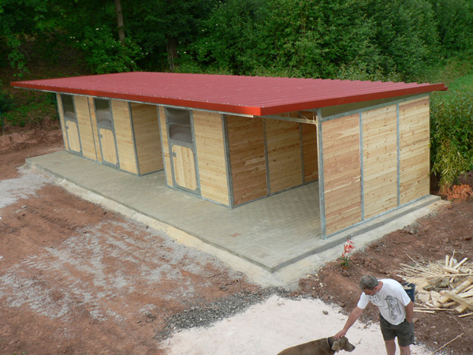
Venkovní boxy pro koněZakázkové venkovní stáje, otevřené pastvinové přístřešky a paddockové boxy.
| Rozměry | Dle projektu a požadavků chovu |
|---|---|
| Provedení | Zcela otevřené, polouzavřené nebo boxové |
| Zastřešení | Pultové, sedlové, obloukové |
Přesné pálení plechů a výpalků řízené PC na automatu ES-320 v sílách 1 až 25 mm.
| Pálící stroj | Automat ES-320 s PC řízením |
|---|---|
| Pracovní šířka stolu | 1 500 mm |
| Pracovní délka stolu | 3 000 mm |
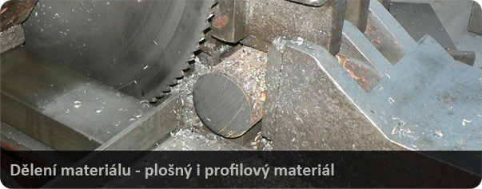
Kovovýroba a technologieDělení tyčí, profilů a trubek do průměru ø 200 mm a střih plechů elektrickými nůžkami.
| Max. průměr řezu | ø 200 mm |
|---|---|
| Strojní vybavení | Kotoučová pila s automatickým podavačem, pásové pily |
| Stříhání plechů | Tabulové elektrické nůžky |
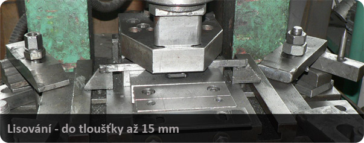
Kovovýroba a technologieLisařské práce na střižných a tvářecích strojích do síly materiálu až 15 mm.
| Typ lisů | Výstředníkové lisy řady LEN |
|---|---|
| Max. síla materiálu | Až do 15 mm |
| Zpracovávané kovy | Ocel, mosaz, bronz, měď, hliník |
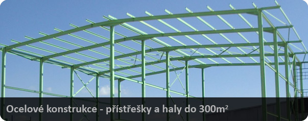
Kovovýroba a technologieVýroba a montáž montovaných ocelových hal, skladových přístřešků do 300 m² a schodišť.
| Rozloha objektů | Haly a přístřešky do 300 m² |
|---|---|
| Typ konstrukce | Lehká ocelová, svařovaná i šroubovaná |
| Sortiment výrobků | Haly, přístřešky, schodiště, mříže, zástěny, vrata |
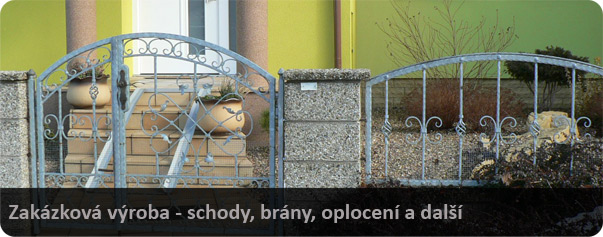
Kovovýroba a technologieBrány s pohonem, průmyslová vrata, ploty, zábradlí a dílce pro OTIS Escalators.
| Praxe v oboru | Od roku 1994 (přes 30 let zkušeností) |
|---|---|
| Výrobní plocha | 1 500 m² vlastních prostor ve Tvrdonicích |
| Portfolio výrobků | Pojezdové brány, vrata, zábradlí, točitá schodiště, poklopy |
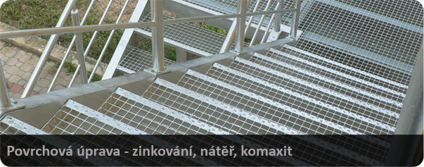
Kovovýroba a technologieŽárové a galvanické zinkování, práškové lakování (komaxit) a průmyslové nátěry.
| Žárové zinkování | Ponorem dle ČSN EN ISO 1461 pro maximální životnost |
|---|---|
| Galvanické zinkování | Elektrolytické pro přesné spojovací a lisované díly |
| Práškové lakování | Komaxit dle vzorníku RAL (fasádní a interiérové odstíny) |
Všechny technologie jsou soustředěny v našem moderním výrobním areálu o rozloze 1 500 m² ve Tvrdonicích.
| Řídicí systém | Průmyslové PC s CAD/CAM návazností |
|---|---|
| Pracovní plocha stolu | 1 500 × 3 000 mm |
| Tloušťka řezu | 1 až 25 mm |
| Materiály | Uhlíková ocel, nerez, mosaz, hliník |
| Dokončení výpalků | 100% obroušeno, bez otřepů a zápalů |
| Výstředníkové lisy | Řada LEN pro střižné i tvářecí operace |
|---|---|
| Maximální síla plechu | Až 15 mm tloušťka materiálu |
| Dělení profilů | Kotoučové a pásové pily do ø 200 mm |
| Plošné stříhání | Elektrické tabulové a profilové nůžky |
| Zpracovávané kovy | Ocel, měď, mosaz, bronz, hliník |
| Konstrukce boxů | Svařované jakly s žárovým zinkováním |
|---|---|
| Antikorozní ochrana | ČSN EN ISO 1461 žárovým ponorem |
| Dřevěné výplně | Masivní hoblované fošny pero-drážka |
| Haly a přístřešky | Rozloha do 300 m² s montáží na klíč |
| Zakázkové reference | OTIS Escalators, jezdecké areály v ČR i Německu |
Firma byla založena 4. ledna 1994 pod názvem Zámečnictví Ryspol. Výrobní prostory se původně nacházely v Břeclavi, kde firma úspěšně působila v pronajatých prostorách až do roku 2003.
Dne 13. února 2003 se firma přejmenovala na Metal Ryspol s.r.o. a v tomtéž roce zakoupila a uvedla do provozu vlastní výrobní areál ve Tvrdonicích o kryté ploše 1 500 m². Od roku 1998 disponujeme vlastním CNC plazmovým pálícím centrem.
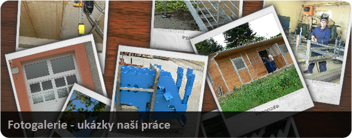
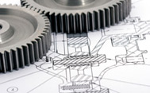
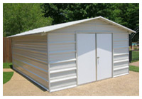
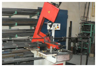
Konzultace technických řešení, kalkulace stájových boxů a příjem výkresové dokumentace pro CNC pálení a kovovýrobu.
Pošlete nám specifikaci Vašeho záměru, rozměry stájových boxů nebo požadavky na CNC pálení plazmou.